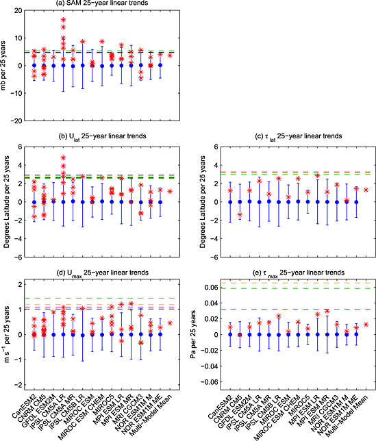

Paper Accepted
Sat 06 June 2015
Southern Hemisphere extratropical circulation: Recent trends and natural variability
The Southern Ocean has been a region of interest in the last few years due to the detection of possibly significant trends in the Southern Annular Mode (SAM) and the mid-latitude westerly jet. Here we quantify the natural variability of the SH extratropical circulation by using Coupled Model Intercomparison Project Phase 5 (CMIP5) preindustrial control model runs and compare with the observed trends in SAM, jet magnitude, and jet location. We find that the observed trends in jet location and magnitude are not outside the natural variability as described by these pre-industrial runs, where the observed trend in the SAM is outside the natural variability.

Natural variability, historical trends, and observations for (a) SAM, (b) 850 mb jet latitude, (c) wind stress jet latitude, (d) 850 mb jet magnitude, and (e) wind stress jet magnitude. Blue circles show the mean of the piControl 25 year linear trends indicating model drift. Whisker length is 2 standard deviations. Red points show the historical run trends for each ensemble member. Horizontal dashed lines indicate the absolute value of the observed trends: NCEP R1 (green), NCEP R2 (orange), ERA-Interim (purple), and JRA-55 (black).